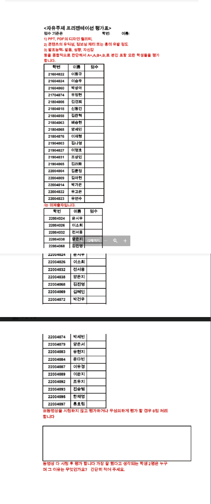

- coding
- html
- css
- javascript
HTML 무엇일까?
This tutorial shows you how to add a line break in HTML. By default, browsers ignore many formatting
keystrokes that we take for granted.
Examples include the Enter and Tab> keys and multiple uses of the spacebar.
To accomplish the same tasks in HTML, you use page formatting tags.

Web browsers wrap text automatically to the next line when the current line reaches the right side of the browser.
When you add a line break in HTML, you avoid this text wrapping and start new text the next line.
To add a line break to your HTML code, you use the tag. The tag does not have an end tag.
You can also add additional lines between paragraphs by using the tags. Each tag you enter creates another blank line.